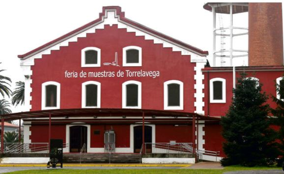

Torrelavega
Vía Verde
|
Conocido en sus inicios como Azucarera Montañesa y posteriormente como Lechera
Montañesa, hoy se llama cariñosamente La Lechera al actual Recinto de Feria de
Muestras de Cantabria, el cual cuenta con una extensión interior de 5.000 metros
cuadrados y una superficie exterior de 23.000.

|